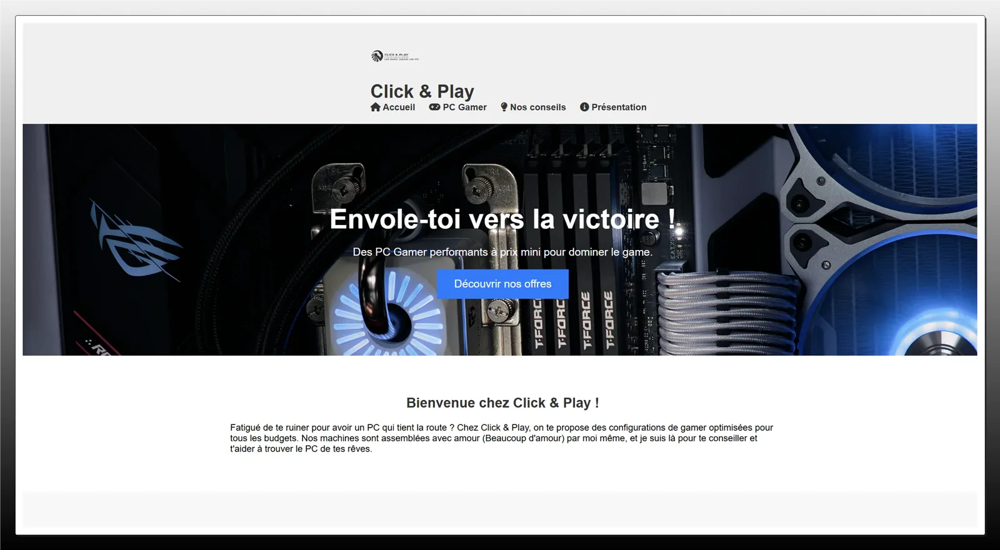
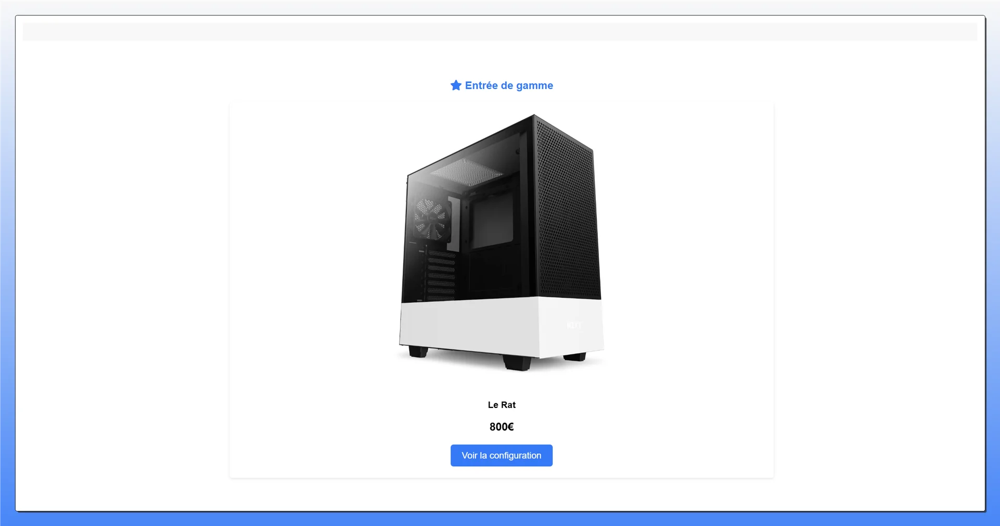
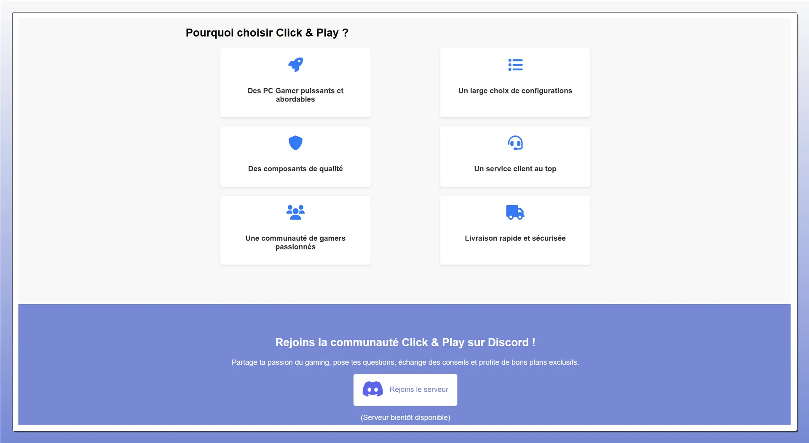

Contexte & Objectifs
Projet personnel declenche par une question simple : comment fonctionne un site e-commerce quand on le construit de zero, sans CMS, sans framework, juste avec du HTML, du CSS et du JavaScript vanilla ? L'univers du PC gaming s'est impose naturellement, etant un terrain que je connais bien en tant que joueur.
L'idee etait de simuler une vraie boutique : catalogue de produits, fiche detaillee avec configurateur, gestion du panier, et une interface qui donne envie d'acheter. Le tout sans librairie externe pour vraiment comprendre ce qui se passe sous le capot.
- Projet personnel, exploration libre
- 4 semaines, solo
- Role : designer et developpeur front-end
- Enjeu : e-commerce vanilla de A a Z
- Stack : HTML5, CSS3, JavaScript ES6+, Figma
Apercu du Projet

Accueil
Mise en avant des configs phares avec visuels gaming et appels a l'action directs.

Fiche Produit
Presentation technique detaillee avec configurateur de composants integre.

Suivi de Commande
Interface de gestion des commandes avec statuts et recapitulatif produits.
Bilan & Apprentissages
Construire un panier en JavaScript pur, sans librairie, m'a oblige a comprendre comment gerer l'etat cote client : stockage dans le localStorage, synchronisation entre pages, mise a jour du DOM sans rechargement. C'est le genre de mecanique qu'on prend pour acquise dans les frameworks mais qu'il faut vraiment comprendre quand on la fait a la main.
J'ai aussi appris que le design e-commerce a ses propres codes : la hierarchie visuelle doit guider l'oeil vers le bouton d'achat, les informations de confiance (stock, livraison, garantie) doivent etre visibles sans chercher. Ce projet m'a donne une lecture plus critique des sites marchands que je visite.
- Gestion d'etat cote client sans framework (localStorage, DOM)
- Architecture CSS scalable avec variables et composants
- UI/UX orientee conversion : hierarchy, CTA, signaux de confiance
- Deploiement historique sur un domaine personnalise (site desormais hors ligne)